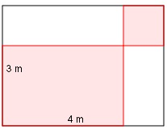
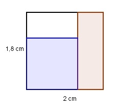
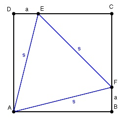
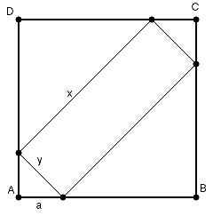
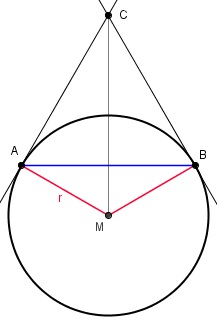
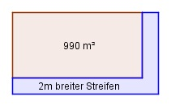
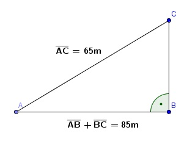
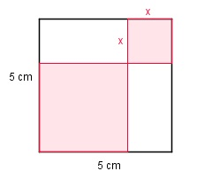
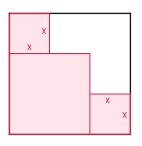
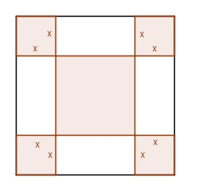

Wie löse ich Matheaufgaben?
Quadratische Gleichungen
Sie sehen ein gelbes Eingabefeld und die
Schalter: Prüfen und Lösung.
Tragen Sie Ihr Ergebnis ein, prüfen Sie es
oder starten Sie eine Lösung.
Aufgabe 84 Die Summe aus einer positiven Zahl und ihrem Kehrwert ergibt das Zehnfache der Zahl. Wie heißt die Zahl?
Aufgabe 85 Die Summe aus dem Quadrat einer positiven Zahl und ihrem Dreizehnfachen ergibt 888. Wie heißt die Zahl? Sie heißt
Aufgabe 86 Die Zahl 100 ist so in 2 Zahlen zu zerlegen, dass deren Quadrate zusammen 5169 ergeben. Wie heißen die beiden Zahlen?
Aufgabe 87 Die Summe zweier Zahlen ergibt 65. Die Summe ihrer Quadratwurzeln ergibt 11. Wie lauten die beiden Zahlen? Kleinere = und 49
Aufgabe 88 Multipliziert man eine Zahl mit der um 6 kleineren, dannerhält man 216. Um welche positive Zahl handelt es sich?
Aufgabe 89 Eine positive Zahl ist um 9 größer als eine andere. Multipliziert man sie, so erhält man 1170. Um welche Zahl handelt es sich? Es ist die Zahl
Aufgabe 90 Addiert man 5 zu einer Zahl und zieht 5 von ihr ab, dann ergibt das Produkt aus der Summe und der Differenz 96. Wie groß ist die Zahl?
Aufgabe 91 Um welche Zahl müssen die Zahlen 19 und 17 vergrößert werden, damit ihr Produkt um 76 größer wird? Um die
Aufgabe 92 Um welche Zahl müssen die Zahlen 19 und 17 verkleinert werden, damit ihr Produkt um 76 größer wird?
Aufgabe 93 Ein Rechteck ist doppelt so groß wie ein Quadrat. Die eine Seite des Rechtecks ist so groß wie eine Quadratseite, die andere ist 12 cm lang. Wie groß ist eine Quadratseite? Sie ist cm groß.
Aufgabe 94 Verkürzt man die Seiten eines Quadrates um 3 cm, dann hat es eine Fläche von 2209 cm². Wie lang ist eine Seite des ursprünglichen Quadrates?
Aufgabe 95 Verlängert man die Seiten eines Quadrates um 7 cm, dannhat es eine Fläche von 2209 cm². Wie lang ist eine Seite des ursprünglichen Quadrates? Sie ist cm lang.
Aufgabe 96 Ein Rechteck hat einen Umfang von 70 m und eine Fläche von 286 m². Wie lang sind die Rechteckseiten?
Aufgabe 97 Ein Grundstück hat eine Fläche von 69 000 m². Es ist 70 m länger als breit. Wie lang und wie breit ist das Grundstück? Es ist m lang.
Aufgabe 98 Eine Küche ist dreimal so lang wie breit. Sie kann mit 108 ganzen quadratischen Platten ausgelegt werden. Die Platten haben eine Kantenlänge von 50 cm. Wie lang und wie breit ist die Küche?
Aufgabe 99 Das Rechteck ist in ein Quadrat (rechts oben) und 3 Rechtecke aufgeteilt. Die rote Fläche beträgt 7 m². Wie groß ist eine Quadratseite?  m oder 2,5 m.
Aufgabe 100 Die Fläche des blauen Quadrates ist gleich der Fläche des roten Rechtecks. Wie groß ist eine Quadratseite? 
Aufgabe 101 Vergrößert man eine Würfelseite um 1 cm, so vergrößert sich sein Volumen um 127 cm². Wie groß ist die ursprüngliche Seitenlänge? Sie beträgt cm.
Aufgabe 102 Ein Rechteck ist 6 cm lang und 5 cm breit. Verkürzt man jede Seite um denselben Betrag, so ist die Fläche des neuen Rechtecks 2/3 der alten Fläche. Wie groß ist die Verkürzung?
Aufgabe 103 Ein Rechteck ist 6 cm lang und 5 cm breit. Die Seitenlängen sind so zu ändern, dass bei gleich bleibender Fläche der Umfang um 1 cm größer wird. Wie lang sind die neuen Seiten? Größere 7,5 cm und cm.
Aufgabe 104 Eine quadratische Säule hat eine Höhe von 5 cm. Wie groß ist die Seitenlänge der Grundfläche, wenn diese 14 cm² größer als eine Seitenfläche ist?
Aufgabe 105 Eine quadratische Säule ist 5 cm hoch und hat eine Oberfläche von 48 cm². Wie groß ist eine Quadratseite? Sie ist cm groß.
Aufgabe 106 Ein Rechteck hat eine Fläche von 17,28 cm². Eine Seite ist1,2 cm größer als die amdere? Wie lang sind die Rechteckseiten?
Aufgabe 107 Verdoppelt man die eine Seite eines Quadrates und verkürzt die andere um 5 cm, dann entsteht ein Rechteck, mit einer 24 cm² größeren Fläche. Wie lang ist eine Quadratseite? Sie ist cm lang.
Aufgabe 108 Ein Quader hat ein Volumen von 90 cm², eine Höhe von 6 cm und eine Mantelfläche von 96 cm². Wie lang sind die Seiten der Grundfläche?
Aufgabe 109 Ein rechtwinkliges Dreieck hat eine Hypotenuse von 29 cm und eine dazugehörige Höhe von 10 cm. Wie groß sind die Hypotenusenabschnitte? Größerer cm
Aufgabe 110 Die Katheten eines rechtwinkligen Dreiecks verhalten sich wie 3 : 4. Wie lang sind sie, wenn die Hypotenuse 50 cm lang ist?
Aufgabe 111 Dem Quadrat mit der Seitenlänge 10 cm ist das blaue gleichseitige Dreieck einbeschrieben. Wie lang sind die Strecke a und die Seitenlänge s?  a = cm
Aufgabe 112 Ein rechtwinkliges Dreieck hat eine Hypotenuse von 65 cm und einen Umfang von 150 cm. Wie lang sind die Katheten?
Aufgabe 113 Die Diagonale eines Rechtecks ist 25 cm lang. Eine Rechteckseite ist 17 cm länger als die andere. Wie groß ist der Umfang des Rechtecks? U = cm
Aufgabe 114 Dem Quadrat mit der Seitenlänge 10 cm ist ein Rechteck einbeschrieben. Wie lang sind die Strecke a und die Rechteckseiten, wenn die Rechteckfläche halb so groß wie die Quadratfläche sein soll? 
Aufgabe 115 Der Abstand von C nach M beträgt 25 cm, der von A nach B 24 cm. Wie groß ist der Radius r und die Strecke von A nach C?  r = cm
Aufgabe 116 Wie groß ist der Radius r und der Abstand von A nach B, wenn der Abstand von C nach M 25 cm beträgt und A von C 17 cm weiter entfernt ist als von M?
Aufgabe 117 Eine Strecke von 10 cm soll nach den Regeln des goldenen Schnittes unterteilt werden. (Die Gesamtstrecke verhält sich zur größeren Teilstrecke wie die größere Teilstrecke zur kleineren.) Wie groß sind die Teilstrecken? Größere = cm
Aufgabe 118 Bei einem positiven Bruch ist der Zähler um 3 größer als der Nenner. Vertauscht man Zähler und Nenner entsteht ein um 2,1 kleinerer Bruch? Wie groß sind Zähler und Nenner?
Aufgabe 119 Bei einem positiven Bruch ist der Zähler um 7 größer als der Nenner. Macht man Zähler wie Nenner um 5 kleiner, vergrößert sich der Wert des Bruches um 0,7. Wie groß sind Zähler und Nenner? Zähler = cm
Aufgabe 120 Die 4. Potenz einer Zahl ist um 12 größer als ihr Quadrat. Um welche Zahl handelt es sich?
Aufgabe 121 Das Doppelte der 4. Potenz einer Zahl ist um 3 größer als das 5 fache ihres Quadrates. Um welche Zahl handelt es sich? Es handelt sich um ±
Aufgabe 122 Zieht man vom 7 fachen einer ganzen Zahl 3 ab und zieht daraus die Quadratwurzel, so erhält man das 3 fache der Zahl verringert um 7.
Aufgabe 123 Dem ursprünglich 990 m² großen Grundstück soll der 2 m breite Streifen abgezogen werden. Das Grundstück ist danach 130 m² kleiner. Wie groß sind die Länge und die Breite des ursprünglichen Grundstücks?  Breite = m
Aufgabe 124 Ein Bus kostet für eine Fahrt 120 €. Die Kosten werden auf die Teilnehmer gleichmäßig verteilt. Hätte sich die Teilnehmerzahl um 2 erhöht, wären die Kosten pro Teilnehmer um 0,25 Cent gesunken. Wie viele Personen haben an der Fahrt teilgenommen?
Aufgabe 125 Ein rechtwinkliges Dreieck hat eine Fläche von 130 cm². Die Hypotenuse ist 26 cm lang. Wie lang sind die beiden Katheten? Größere = cm
Aufgabe 126 Ein Kunde hat im Sommer für 2160 € Heizöl gekauft. Im Herbst für weitere 600 €. Im Herbst waren es 3000 l weniger als im Sommer, der Liter kostete aber 6 Cent mehr. Wie hoch war der Literpreis im Sommer?
Aufgabe 127 Zwei Händler liefern Eier in Großpackungen. In der Großpackung von Händler A sind 16 Eier weniger als in der von Händler B. Für eine Bestellung liefern beide je 12 000 Eier in insgesamt 275 Großpackungen. Wie viel Eier sind in einer Packung von Händler A? Wie viel Packungen liefert Händler B? Es sind Packungen
Aufgabe 128 Um von A nach C zu gelangen, gibt es zwei Möglichkeiten. Von A direkt nach C sind es 65 m. Von A nach C über B sind es 85 m. Wie weit ist B von A entfernt? 
Aufgabe 129 Die rote Fläche in dem Quadrat hat eine Größe von 17,62 cm². Wie groß ist x?  x = cm oder x = 4,1 cm.
Aufgabe 130 Die rote Fläche ist 17,32 cm² groß. Wie groß ist x? 
Aufgabe 131 Die rote Fläche in dem Quadrat hat eine Größe von 14,92 cm². Wie groß ist x?  x = cm oder x = 1,8 cm.
Aufgabe 132 Ein Bus kostet für eine Fahrt 175 €, die gleichmäßig auf die Teilnehmer verteilt werden. 10 Plätze bleiben frei. Bei vollem Bus müsste jeder Teilnehmer 2 € weniger bezahlen. Wie viel Plätze sind besetzt? Wie viel muss jeder bezahlen?
Aufgabe 133 Eine Firma hat für 12 500 € eine Maschine gekauft und schreibt sie 2 Jahre mit gleich bleibendem Prozentsatz ab. Nach den 2 Jahren hat die Maschine noch einen Buchwert von 10 580 €. Wie hoch war der Prozentsatz? Er betrug %
Aufgabe 134 Ein Spieler setzt beim Roulette 800 € ein und gewinnt. Dann setzt er die 800 € und den Gewinn ein und gewinnt wieder. Insgesamt hat er 352 € gewonnen. Wie hoch war jeweils der Gewinn, wenn er prozentual gleich blieb?
Aufgabe 135 Der Umsatz eines Betriebes von 360 000 € hat sich in einem Jahr um weniger als 10% verringert. Im Jahr darauf hat er sich um den doppelten Prozentsatz auf 376 200 € vergrößert. Wie hoch ist der Prozentsatz? Er beträgt %
Aufgabe 136 Ein Bauteil kostet im Einkauf 25 €. Der Händler erhöht erst diesen Preis um seinen üblichen Zuschlag, dann gewährt er darauf einen Rabatt in Höhe von einem Drittel des Zuschlages. Wie hoch ist der Zuschlag in Prozent?
Aufgabe 137 Ein Bankkunde kauft für 200 000 € Aktien. Der Kurs der Aktie steigt, er verkauft sie mit Gewinn. Danach kauft er mit dem gestiegenen Geldbetrag wieder Aktien, die er mit Verlust verkaufen muss. Der Verlust ist 5% höher als der Gewinn und beträgt 20 000 €. Wie hoch war der Gewinn in Prozent? Er betrug %
Aufgabe 138 Ein Sparer hat 4000 € angelegt. Nach einem Jahr hebt er 500 € ab, gleichzeitig senkt die Bank den Zinssatz um 0,5 %. Mit wie viel Prozent hat die Bank den ursprünglichen Betrag verzinst, wenn der Sparer nach 2 Jahren noch 3672 € auf seinem Konto hat?
Aufgabe 139 Am Anfang eines Jahres befinden sich 2500 € auf einem Konto. Wie hoch ist der Zinssatz, wenn nach 2 Jahren 2652,25 € auf dem Konto sind und nichts abgehoben wurde? x = %
Aufgabe 140 In einer Firma sank der Umsatz von 490 000 € um einen bestimmten Prozentsatz. Im Jahr darauf stieg er um denselben Prozentsatz auf 488 775 €. Wie hoch ist der Prozentsatz?
Aufgabe 141 Auf einem Sparkonto befinden sich 4000 €. Am Ende des ersten Jahres zahlt der Sparer 200 € ein. Wie hoch ist der Zinssatz, wenn der Kontostand Ende des zweiten Jahres 4491,90 € beträgt. Der Zinssatz ist %
Aufgabe 142 Auf einem Sparbuch befinden sich 5000 €. Am Ende des ersten Jahres hebt die Besitzerin 800 € ab. Ein Jahr später sind 4386 € angespart. Wie hoch ist der Zinssatz?
Aufgabe 143 Auf einem Sparbuch befinden sich 5500 €. Nach einem Jahr erhöht die Sparkasse den Zinssatz um 0,5 %. Am Ende des zweiten Jahres befinden sich 5694,15 € auf dem Konto. Wie hoch war der ursprüngliche Zinssatz? Er betrug %
Aufgabe 144 Eine Etappe der Tour de France ist 210 km lang. Fahrer A hat eine Geschwindigkeit, die 2 km/h kleiner ist als die von Fahrer B. Fahrer B ist 15 Minuten früher im Ziel als Fahrer A. Wie hoch sind ihre Geschwindigkeiten?
Aufgabe 145 Ein Schiff empfängt SOS-Rufe eines 50 sm entfernten Schiffes. Nach Erhöhung seiner Geschwindigkeit um 5 Knoten, kommt es 30 Minuten früher zu dem havarierten Schiff als wenn es die ursprüngliche Geschwindigkeit beibehalten hätte. Nach wie viel Stunden erreicht das Schiff die Unglücksstelle? Nach h
Aufgabe 146 Schiff A begegnet Schiff B. Schiff A fährt nach Norden Schiff B nach Osten mit einer Geschwindigkeit, die 10 Knoten größer als die von Schiff A. Nach zwei Stunden sind sie 100 sm voneinander entfernt. Welche Geschwindigkeit haben sie?
Aufgabe 147 Eine Prüfstrecke ist 50 km lang. Ein Flugzeug braucht dafür hin mit und zurück gegen den Wind insgesamt 9,5 Minuten. Die Windgeschwindigkeit beträgt 8 m/s. Welche Geschwindigkeit hat das Flugzeug? Es sind km/h
Aufgabe 148 Ein Schiff hat eine Geschwindigkeit von 30 km/h. Für 45 km braucht es gegen die Strömung 0,5 h länger als mit ihr. Wie hoch ist die Strömungsgeschwindigkeit?
Aufgabe 149 Bei einem Quader mit einer Oberfläche von 568 cm² stoßen an einer Ecke 3 Kanten zusammen. Die erste ist 4 cm größer als die zweite und 4 cm kleiner als die dritte. Wie lang sind die Kanten in cm? Die dritte ist cm lang.
Aufgabe 150 Das Volumen zweier Würfel unterscheidet sich um 9 970 cm³. Die Seiten des größeren Würfels sind 10 cm größer als die des kleineren. Wie lang sind die Seiten?
Aufgabe 151 Die Oberflächen zweier Kugeln ergeben zusammen 15 400 cm². Ihre Radien unterscheiden sich um 7 cm. Wie lang sind die Radien? Kleinerer cm
Aufgabe 152 Arbeiter A braucht für einen Auftrag 9 Tage länger als Arbeiter B. Zusammen schaffen sie ihn in 20 Tagen. Wie lange hätte jeder alleine gebraucht?
Aufgabe 153 Pumpe A braucht zum Befüllen eines Behälters 24 Minuten länger als Pumpe B. Zusammen brauchen sie 35 Minuten. Wie lange brauchen die Pumpen alleine? B braucht min
Aufgabe 154 2 Pumpen befüllen zusammen einen Kessel in 6 Stunden. Nacheinander in Betrieb gesetzt, befüllen sie in 25 Stunden den Kessel zweimal. In wie viel Stunden befüllen sie den Kessel alleine?
Aufgabe 155 Ein Zug braucht auf einer Strecke von 180 km deswegen 60 Minuten weniger, weil er im Schnitt 9 km/h schneller ist. Wie viel Stunden benötigt er für die Strecke? Er braucht h
Aufgabe 156 Ein Eilzug braucht für 225 km 3,5 Stunden weniger als ein Personenzug. Er legt dabei 26,25 km in der Stunde mehr zurück als der Personenzug. Wie hoch ist die Geschwindigkeit des Personenzuges und die Fahrzeit des Eilzuges?
Aufgabe 157 Ein Fußgänger geht mit 5 km/h von A nach B. Nach 1,5 h überholt ihn von A aus ein Radfahrer, der 30 Minuten später in B ankommt, dort dreht und zur selben Zeit wieder in in A ist, wie der Fußgänger in B. Wie weit sind A und B voneinander entfernt. Es sind km
Aufgabe 158 Auf dem einen Schenkel eines rechten Winkels befindet sich im Abstand von 11 cm ein Punkt P, auf dem anderen im Abstand von 3 cm ein Punkt Q. P beginnt 6 s nach Q sich mit gleicher Geschwindigkeit wie Q zu bewegen und hat nach 3 s einen Abstand von 130 cm von Q. Welche Geschwindigkeit haben sie?
Aufgabe 159 Auf dem Umfang eines Kreises von 420 m Länge bewegen sich zwei Punkte A und B. B legt in der Minute 25 m mehr zurück als A und braucht deswegen für eine Umrundung 5 Minuten weniger als A. Wie hoch sind die Geschwindigkeiten der Punkte? A hat eine von m/min
Aufgabe 160 Schiff A, das um 9.30 mit einer Geschwindigkeit von 13,2 km/h abfährt, begegnet um 11.18 Schiff B, das um 8.00 Uhr abgefahren ist. Schiff A kommt 30 Minuten früher an als Schiff B. Wie lang ist die Strecke?
Aufgabe 161 Schneidet man einen Zylinder in der Mitte senkrecht durch, so entsteht ein Rechteck mit einem Umfang von 26 cm. Der Zylinder hat eine Oberfläche von 138,23 cm². Wie groß ist sein Volumen? Es beträgt cm³
Aufgabe 162 Erhöht man in einem Stromkreis mit anliegenden 120 V den Widerstand um 10 Ω, sinkt die Stromstärke um 1 A. Wie groß sind Stromstärke I und Widerstand R?
Aufgabe 163 2 Widerstände, die sich um 200 Ω unterscheiden, sind parallel geschaltet und haben einen Gesamtwiderstand von 24 Ω. Wie groß ist der kleinere Widerstand? Er ist Ω groß.
Aufgabe 164 2 Widerstände sind in Reihe geschaltet und haben einen Gesamtwiderstand von 50 Ω. Schaltet man sie parallel, beträgt der Gesamtwiderstand 8 Ω. Wie groß sind sie?
Aufgabe 165 Ein Hof ist 48 m breit und 54 m lang. Es soll rundum ein gleich breiter Streifen mit Platten von 30 cm Kantenlänge so angelegt werden, dass innen 567 m² für Rasen frei bleiben. Wie viel Platten braucht man, und wie breit muss der Streifen sein? Die Breite beträgt m.
Aufgabe 166 Eine Sehne hat zum Kreismittelpunkt einen Abstand von 9 cm und ist 39 cm länger als dessen Radius. Wie lang ist die Sehne?